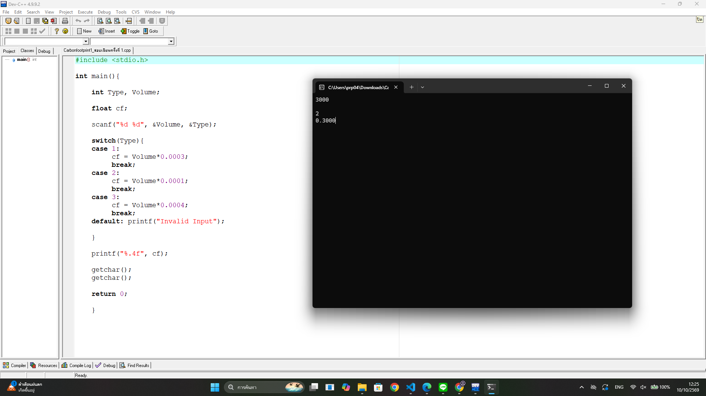

About
Hi! My name is Radaporn Doopong, and I am a first-year Computer Science student at Thammasat University. I created this portfolio to share my learning journey, the website I built, and what I learned from this project. Through this experience, I got to explore HTML and CSS and improve my basic web development skills.
My Portfolio
Course Assignment
CS100_Pricingcards
-
Title :
Pricing Cards
- Type : Web Development Project
- Date : Sep 27 2036
- Role : Web Developer
- Description : Created a pricing cards website featuring two plans: Free for individual users and Pro for agencies. The website displays the price, features of each plan, and Subscribe buttons. HTML and Bootstrap were used to structure and design the website.
- Skills : HTML, CSS, Bootstrap 5, Responsive Web Design
- Reflection : Through this project, I learned how to use HTML to structure website content and Bootstrap to create pricing cards. I also practiced using the Grid System to arrange elements and styling buttons to match each pricing plan. If I had the opportunity to improve the project, I would customize the CSS to give the website a more unique design and test its responsiveness on different screen sizes.
Course Assignment
CS100_Ratingcomponent
- Title : Ratting Cards
- Type : Web Development Project
- Date : Sep 28 2026
- Role : Web Developer
- Description : Created a product rating component that displays an average rating of 4.8 stars, a search bar for reviews, and a rating distribution from 1 to 5 stars. Bootstrap was used to structure the layout and create the rating bars, while Font Awesome was used to display icons.
- Skills : HTML, CSS, Bootstrap, Font Awesome, UI Desing
- Reflection : Through this project, I learned how to use Bootstrap to organize content into rows and columns and create a clean user interface. I also learned how to display rating information using star icons and progress bars. If I had the opportunity to improve the project, I would add functionality to the search bar so users could search for specific reviews and make the component responsive on different screen sizes.
Self Learning
Calculation Program Using Cd
- Title : Calculation Program Using C
- Type : Web Programming Assignment
- Date : Depends on my freetime
- Role : Programmer
- Description : Practiced writing programs in the C programming language to calculate values based on given problems. I worked on translating problem requirements into code, receiving input from users, performing calculations using arithmetic operators, and displaying the results. The program helped me practice the basic structure of a C program and understand how to solve mathematical problems through programming.
- Skills : C Programming, Variables, Data Types, User Input, Arithmetic Operators, Basic Problem Solving
- Reflection : Through this practice, I developed my basic C programming skills and learned how to write code to solve calculation problems. I practiced using variables, performing mathematical operations, and displaying output correctly. If I had the opportunity to improve my skills, I would practice more challenging calculation problems and learn to write more organized and efficient code.

Reflection
Throughout these projects, I gained experience in both web development and programming. I learned how to use HTML, CSS, and Bootstrap to create structured and responsive web pages, as well as how to use C programming to solve calculation problems. Each project helped me improve my technical skills, problem-solving abilities, and understanding of how to develop a project step by step. Although I faced challenges with website layouts, CSS styling, and programming logic, I learned to solve problems by practicing, researching documentation, and using learning resources. In the future, I would like to continue improving my coding skills, create more interactive websites, and develop more efficient programs.